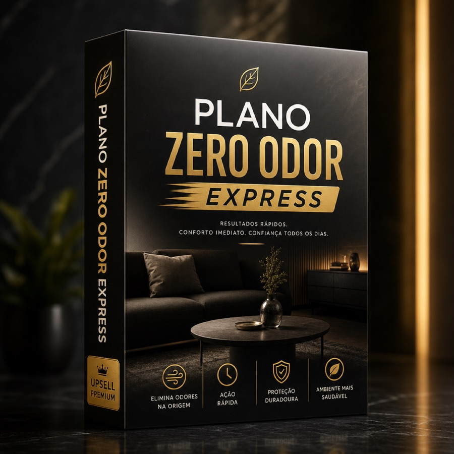

Promessa de resultado
Aplique a rotina do Selo Zero Odor Canino com muito menos tentativa e erro, seguindo uma implementação assistida que encurta o caminho entre entender o plano e colocá-lo em prática em casa.
Espere, tutor…
Você já garantiu o Selo Zero Odor Canino. Agora tem acesso à camada privada de implementação: Plano Zero Odor Express — o atalho entre entender o plano e colocá-lo em prática em casa.

Resultados rápidos. Conforto imediato. Confiança todos os dias.
Aplique a rotina do Selo Zero Odor Canino com muito menos tentativa e erro, seguindo uma implementação assistida que encurta o caminho entre entender o plano e colocá-lo em prática em casa.
Você recebe a sequência de implementação guiada para os primeiros dias, ajustes prontos para quando a rotina travar e um roteiro de execução simplificado para aplicar tudo sem improviso. Inclui ainda correções rápidas para os erros mais comuns na rotina doméstica e um modelo de acompanhamento para manter consistência sem retrabalho.
É a camada privada para quem não quer só aprender o que fazer, mas quer executar com direção. Um atalho de implementação reservado para transformar o guia em rotina real, com mais clareza, velocidade e segurança na hora de agir.
ou 4x de R$ 14,25 · só agora
Menos que dois pacotes de petiscos premium — e com direção de verdade.
Sim, quero o Plano Zero Odor ExpressOferta vinculada a este pedido · não fica disponível depois
Não, quero só o que já comprei →Foco em cortar a causa na rotina — não só tapar o cheiro por algumas horas.
Implementação assistida para os primeiros dias, sem ficar adivinhando a ordem.
Modelo de acompanhamento para não perder o ritmo depois do entusiasmo inicial.
Mais conforto em casa e mais confiança no colo, no sofá e com visitas.
Clareza da causa + plano de 14 dias + checklist. Base essencial para começar.
A mesma base, com implementação assistida: sequência dos primeiros dias, o que fazer quando travar e acompanhamento para virar rotina de verdade.